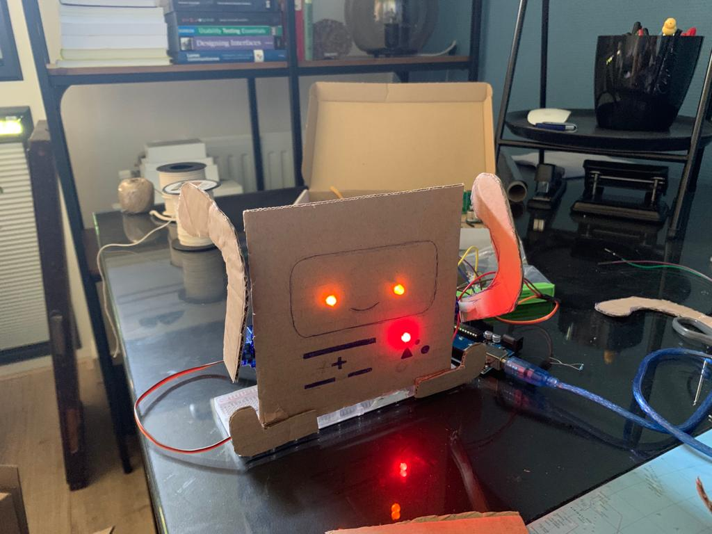
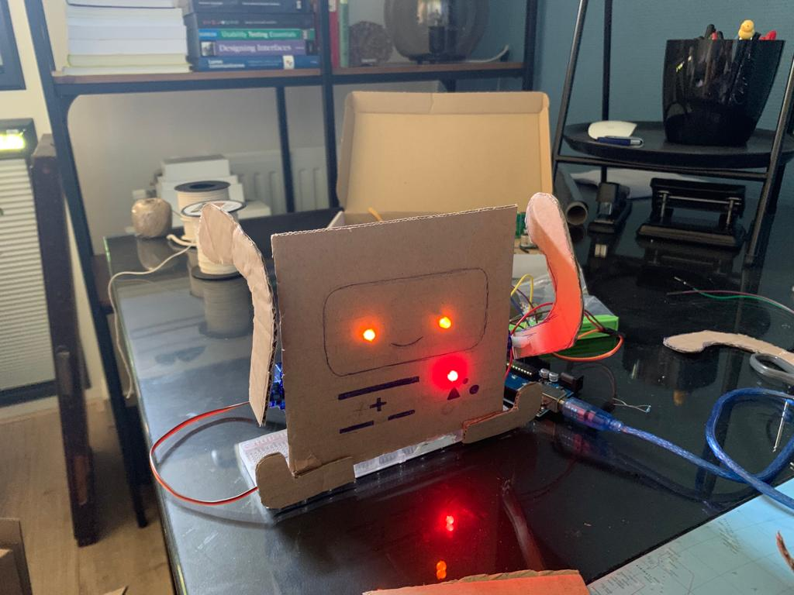
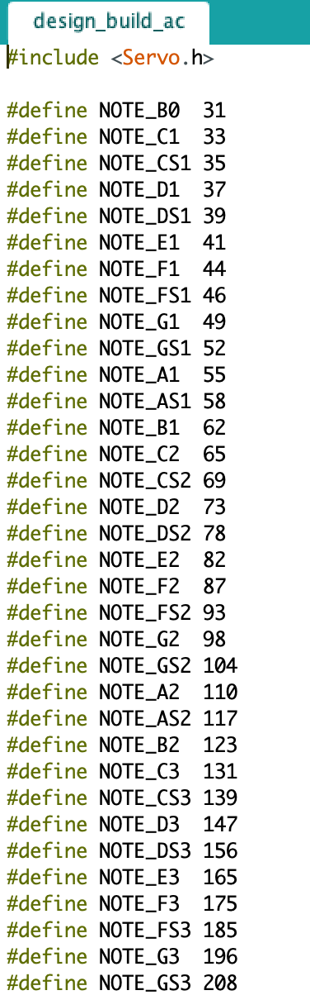

ARTIFICIAL CREATURES
CHALLENGE
DESIGN & BUILD
Voor het design & build gedeelte van de challenge heb ik een robot wekker gemaakt. Als het licht een bepaalde hoeveelheid bereikt gaat de robot aan. Als eerst beweegt deze zijn armen en vervolgens begint er een liedje af te spelen. Het rode LED lampje op de robot gaat af in dezelfde maat als het liedje. Als het opnieuw een bepaalde hoeveelheid licht bereikt gaat de robot uitzichzelf uit. Hiervoor is gekozen, omdat de gebruiker dan uit zijn bed moet gaan om het licht aan te doen waardoor de kans om te blijven liggen drastisch verkleint.
Proces
Als eerste begon ik met het maken van het skelet: de armen en ogen. Vervolgens kwam hier het rode LED-lampje bij en de tekening. Daarnaast had ik eerst een piepende zoomer, maar veranderde deze naar een liedje.
 


Code

Showcase video